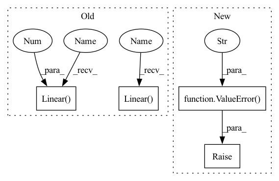

Pattern ID :40901

Before Change
self.classifier = nn.Sequential(
nn.Dropout(),
nn.Linear(inputFeaturesForClassifier, 512),
nn.ReLU(True),
nn.Dropout(),
nn.Linear(512, 512),
nn.ReLU(True),
nn.Linear(512, 10),
nn.ReLU(True),
After Change
elif n_dimensions == 3:
self.Conv = nn.Conv3d
else:
raise ValueError("Only 2D or 3D convolutions are supported.")
self.classifier = nn.Sequential(
nn.Dropout(),
self.global_pooling,
In pattern: SUPERPATTERN
Frequency: 3
Non-data size: 4
Instances
Fragment ID: 115284959
Project Name: cbica/gandlf
Commit Name: c1e85a74696e576c03ea9be291ecfe1ba664b1d5
Time: 2021-06-15
Author: sarthak.pati@hotmail.com
File Name: GANDLF/models/pool_test.py
M Class Name: POOL_TEST
N Class Name: POOL_TEST
M Method Name: __init__(6)
N Method Name: __init__(6)
M Parent Class: nn.Module
N Parent Class: nn.Module
M File Name: GANDLF/models/pool_test.py
N File Name: GANDLF/models/pool_test.py
M Start Line: 43
M End Line: 55
N Start Line: 54
N End Line: 74
'>
Before Change
nn.Linear(inputFeaturesForClassifier, 512),
nn.ReLU(True),
nn.Dropout(),
nn.Linear(512, 512),
nn.ReLU(True),
nn.Linear(512, 10),
nn.ReLU(True),
nn.Linear(10, n_outputClasses),
)
// Initialize weights
for m in self.modules():
After Change
elif n_dimensions == 3:
self.Conv = nn.Conv3d
else:
raise ValueError("Only 2D or 3D convolutions are supported.")
self.classifier = nn.Sequential(
nn.Dropout(),
self.global_pooling,
'>
Fragment ID: 115284958
Project Name: cbica/gandlf
Commit Name: c1e85a74696e576c03ea9be291ecfe1ba664b1d5
Time: 2021-06-15
Author: sarthak.pati@hotmail.com
File Name: GANDLF/models/pool_test.py
M Class Name: POOL_TEST
N Class Name: POOL_TEST
M Method Name: __init__(6)
N Method Name: __init__(6)
M Parent Class: nn.Module
N Parent Class: nn.Module
M File Name: GANDLF/models/pool_test.py
N File Name: GANDLF/models/pool_test.py
M Start Line: 43
M End Line: 55
N Start Line: 54
N End Line: 74
'>
Before Change
self.lstm_state_size = lstm_state_size
// Build the Module from fc + LSTM + 2xfc (action + value outs).
self.fc1 = nn.Linear(self.obs_size, self.fc_size)
self.lstm = nn.LSTM(
self.fc_size, self.lstm_state_size, batch_first=True)
self.action_branch = nn.Linear(self.lstm_state_size, num_outputs)
self.value_branch = nn.Linear(self.lstm_state_size, 1)
// Holds the current "base" output (before logits layer).
self._features = None
@override(ModelV2)
After Change
if not isinstance(self, nn.Module):
raise ValueError(
"Subclasses of TorchModelV2 must also inherit from "
"nn.Module, e.g., MyModel(TorchModelV2, nn.Module)")
ModelV2.__init__(
self,
obs_space,
'>
Fragment ID: 115284953
Project Name: rlturkiye/flying-cavalry
Commit Name: c99d3652b694735ca1dba198a2812959b4ee1c5c
Time: 2021-03-31
Author: muhammetkaratr@gmail.com
File Name: RLLIB/jointDQN.py
M Class Name: JointDQN
N Class Name: JointDQN
M Method Name: __init__(6)
N Method Name: __init__(8)
M Parent Class: ModelV2
N Parent Class: TorchRNN,nn.Module
M File Name: RLLIB/jointDQN.py
N File Name: RLLIB/jointDQN.py
M Start Line: 21
M End Line: 38
N Start Line: 22
N End Line: 34